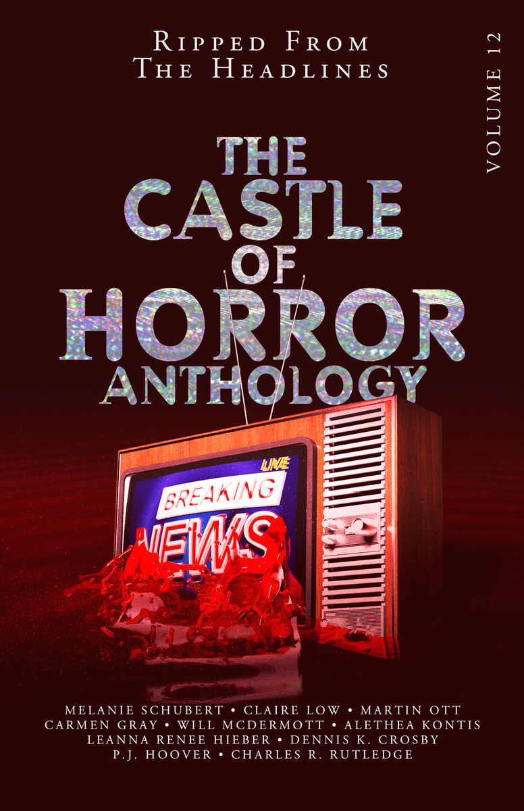

Our Catalog / Castle of Horror Anthology Volume 12: Ripped from the Headlines

Castle of Horror Anthology Volume 12: Ripped from the Headlines
The Castle of Horror is BACK with stories torn-- ripped, that is-- from the headlines:
In “Ghost Flight” by Dennis K. Crosby, a man’s grief and a deal with a being capable of changing the very fabric of reality sets in motion the mystery of Malaysian Flight 370.
“Brew of the Bayou” by P. J. Hoover follows a group of friends whose spooky cocktail experiment takes a terrifying turn when they accidentally awaken an ancient swamp god.
Alethea Kontis’ “The Ghost Lake Mermaid” and her best friend Jinna welcome a new ghost whose presence unravels the mysteries of Buckle Springs
Claire Low gives us a look at an eerie incident that might have happened during Apollo 11 in “Michael Collins on the Dark Side of the Moon” by Claire Low.
“Caretakers” by Will McDermott tells the story of a traveling cat, one of many on a secret mission to serve and protect.
“Ghost Chat” by Martin Ott tells the story of a brilliant tech executive who develops an AI to mimic her late husband, to troubling results.
Inspired by one of the still unsolved cypher clues left by the Zodiac Killer, Charles R. Rutledge’s “Paradice” features Sir Gawain in the here and now, tracking a new series of murders and the terrible secret behind them.
“Sentient Slime” brings us Melanie Schubert’s icky-sweet and obsessive look at a scientist who saved Einstein’s Brain and may be a little possessed by it.
“Small Mercies” by Carmen Gray introduces us to the terrible crimes of New Orleans’ legendary, haunted LaLaurie Mansion.
Leanna Renee Hieber explores a shocking tale based on a chapter in her nonfiction America’s Most Gothic, of a man who called himself a count, grave-robbing, and supernatural vengeance in “Frau Perchta Comes for the Count.”
Welcome back to the Castle of Horror!